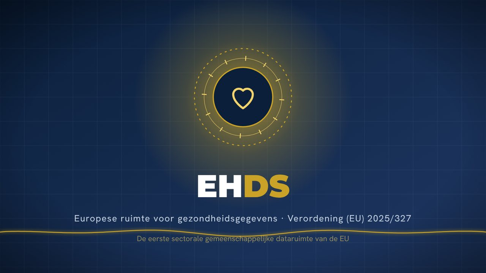

ARG
ARGARGOS › Regelgeving in 4 minuten › EHDS
EHDS in 4 minuten: Voor ziekenhuizen en fabrikanten
De EHDS is de eerste sectorale gemeenschappelijke dataruimte van de Unie. Van opgesloten gegevens naar gegevens die met de patiënt meereizen. Voor ziekenhuizen en fabrikanten verandert veel.

- 0:00Spoedeisende hulp
- 0:14De verordening
- 0:33Wat verandert
- 0:53EHDS
- 1:04Zo werkt het
- 1:33Prioritaire gegevens
- 1:47Planning
- 2:07Rechten
- 2:21Nationaal
- 2:41Wat te doen
Kerngegevens
- 105 artikelen · van kracht sinds 26 maart 2025
- 26.3.2027 algemene toepassing
- 2029 eerste groep gegevens en start secundair gebruik
- 2031 tweede groep gegevens
- 2035 laatste fasen
- Directe toegang De patiënt ziet zijn gegevens
- CE-markering Het dossier, gereguleerd product
- Europees formaat Gestandaardiseerde uitwisseling
Transcriptie
Volledige tekst van de voice-over
0:00 · Spoedeisende hulp
Een patiënte komt op een spoedeisende hulp in het buitenland. Haar dossier is thuis gebleven. Haar uitslagen, in een ander systeem. Haar medicatie, op papier. En de arts beslist blind.
0:14 · De verordening
De Europese ruimte voor gezondheidsgegevens wil dat veranderen. Een verordening van 105 artikelen, van kracht sinds maart 2025. Ze geeft iedereen controle over de eigen gezondheidsgegevens, en maakt dossiers uitwisselbaar. De boetes lopen op tot twintig miljoen euro.
0:33 · Wat verandert
Voor ziekenhuizen en fabrikanten verandert veel. De patiënt ziet zijn gegevens meteen, en wie ze inzag. Systemen voor patiëntendossiers worden een product met CE-markering. Uitwisseling gebeurt in een gemeenschappelijk Europees formaat. Hergebruik alleen met vergunning. En elke toegang wordt gelogd.
0:53 · EHDS
De EHDS is de eerste sectorale gemeenschappelijke dataruimte van de Unie. Van opgesloten gegevens naar gegevens die met de patiënt meereizen.
1:04 · Zo werkt het
Zo werkt het. Primair gebruik: de patiënt bekijkt, vult aan, beperkt en deelt zijn gegevens, ook in het buitenland. Gereguleerd product: interoperabiliteit en toegangslog, met CE-markering. Secundair gebruik: toegangsinstanties geven vergunningen voor onderzoek en AI. In beveiligde omgevingen, met geanonimiseerde gegevens. En nooit om te discrimineren of iemand te heridentificeren.
1:33 · Prioritaire gegevens
De prioritaire gegevens komen in twee groepen. Eerst de patiëntsamenvatting, het e-recept en de elektronische verstrekking. Daarna beelden en labuitslagen, en ontslagbrieven. Alles in het Europese uitwisselingsformaat.
1:47 · Planning
De planning is lang, maar loopt al. 26 maart 2027: algemene toepassing. 2029: de eerste groep gegevens en de start van secundair gebruik. 2031: de tweede groep. En 2035: de laatste fasen.
2:07 · Rechten
De patiënt krijgt rechten. Directe en gratis toegang. Aanvullen en rectificatie vragen. Gegevens meenemen, ook naar het buitenland. Bepalen wie wat ziet. En weten wie keek, en wanneer.
2:21 · Nationaal
In Nederland regelt de Wet elektronische gegevensuitwisseling in de zorg al de uitwisseling tussen zorgverleners. Landelijke standaarden zorgen dat systemen dezelfde taal spreken. Burgers zien hun gegevens in een persoonlijke gezondheidsomgeving. En de EHDS tilt dat naar Europees niveau.
2:41 · Wat te doen
Wat nu te doen. Systemen inventariseren, interoperabiliteit en toegangslog voorbereiden, gegevens ordenen voor hergebruik. ARGOS toetst EHDS en AVG tegelijk, met actieve tests op de echte systemen, zonder dat gegevens het ziekenhuis verlaten. EHDS: gezondheidsdata in dienst van de patiënt.
Veelgestelde vragen
Wat is EHDS?
De EHDS is de eerste sectorale gemeenschappelijke dataruimte van de Unie. Van opgesloten gegevens naar gegevens die met de patiënt meereizen. De Europese ruimte voor gezondheidsgegevens wil dat veranderen. Een verordening van 105 artikelen, van kracht sinds maart 2025. Ze geeft iedereen controle over de eigen gezondheidsgegevens, en maakt dossiers uitwisselbaar. De boetes lopen op tot twintig miljoen euro.
Wat vraagt EHDS?
Zo werkt het. Primair gebruik: de patiënt bekijkt, vult aan, beperkt en deelt zijn gegevens, ook in het buitenland. Gereguleerd product: interoperabiliteit en toegangslog, met CE-markering. Secundair gebruik: toegangsinstanties geven vergunningen voor onderzoek en AI. In beveiligde omgevingen, met geanonimiseerde gegevens. En nooit om te discrimineren of iemand te heridentificeren.
Wat zijn de belangrijke data?
De planning is lang, maar loopt al. 26 maart 2027: algemene toepassing. 2029: de eerste groep gegevens en de start van secundair gebruik. 2031: de tweede groep. En 2035: de laatste fasen.
Wat geldt er in Nederland?
Voor ziekenhuizen en fabrikanten verandert veel. De patiënt ziet zijn gegevens meteen, en wie ze inzag. Systemen voor patiëntendossiers worden een product met CE-markering. Uitwisseling gebeurt in een gemeenschappelijk Europees formaat. Hergebruik alleen met vergunning. En elke toegang wordt gelogd. In Nederland regelt de Wet elektronische gegevensuitwisseling in de zorg al de uitwisseling tussen zorgverleners. Landelijke standaarden zorgen dat systemen dezelfde taal spreken. Burgers zien hun gegevens in een persoonlijke gezondheidsomgeving. En de EHDS tilt dat naar Europees niveau.
Wat moet een bedrijf nu doen?
Wat nu te doen. Systemen inventariseren, interoperabiliteit en toegangslog voorbereiden, gegevens ordenen voor hergebruik. ARGOS toetst EHDS en AVG tegelijk, met actieve tests op de echte systemen, zonder dat gegevens het ziekenhuis verlaten. EHDS: gezondheidsdata in dienst van de patiënt.
Officiële bronnen
Ga verder met
 AI-verordening
AI-verordeningAI-verordening in 4 minuten: Nederland: een eigen model
 NIS2
NIS2NIS2 in 4 minuten: Nederland: wet zonder overgangstermijn
 Data Act en DGA
Data Act en DGAData Act en DGA in 4 minuten: Nederland: een toezichthouder met tanden
Stem en muziek gegenereerd met kunstmatige intelligentie (art. 50 AI-verordening). Algemene informatie, geen juridisch advies; stand van zaken november 2026, volgens de regelgevingsfiches van Software in a Box. Videoclips onder licentie van Envato.
Deze presentatie insluiten op een andere website: <iframe src="https://argos.softwareinabox.eu/nl/regelgeving/ehds/presentacion/?embed=1" width="960" height="540" allow="autoplay; fullscreen" title="EHDS in 4 minuten: Voor ziekenhuizen en fabrikanten"></iframe> met een link naar deze pagina.
Ook beschikbaar in: EspañolDeutschFrançaisFrançais (Belgique)ItalianoNederlands (België)PortuguêsDansk